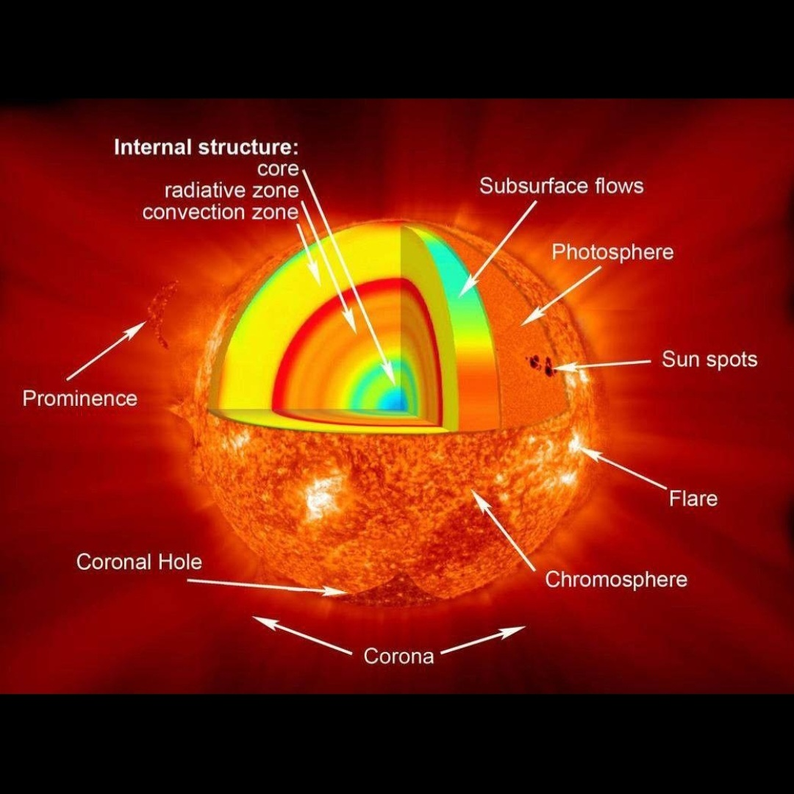

☀️ Sun
The Heart of the Solar System
📖 About the Sun
The Sun is a massive star located at the center of our Solar System. It is the main source of light, heat, and energy for all planets, especially Earth.
It is made mostly of hydrogen and helium, and energy is produced through nuclear fusion in its core.
Without the Sun, life on Earth would not exist. It controls climate, weather, seasons, and supports all living beings.
The Sun is extremely hot, with its core reaching millions of degrees.
🌌 10 Important Facts about the Sun
Sun Facts
1. The Sun is a giant star at the center of the Solar System.
2. It is made mostly of hydrogen and helium.
3. Nuclear fusion produces its energy.
4. The Sun is about 4.6 billion years old.
5. It is essential for life on Earth.
6. Its gravity holds planets in orbit.
7. Surface temperature is around 5,500°C.
8. Core temperature is millions of degrees.
9. The Sun is a plasma, not a solid object.
10. It will continue shining for billions of years.
⬅ Back to Solar System